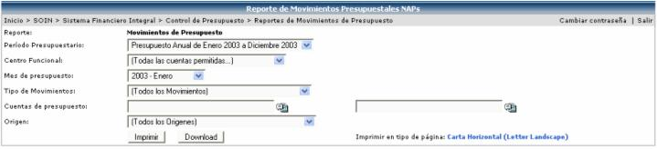
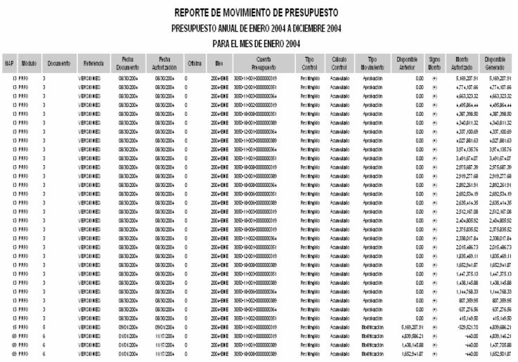

La siguiente pantalla
muestra los filtros a utilizar para generar el reporte de movimientos
de presupuesto. El mismo se puede generar en HTML, presionando el botón
 o en Excel presionando el botón
o en Excel presionando el botón  . El sistema
le sugiere al usuario la orientación y tamaño de la hoja, para cuando
desee imprimir el reporte, sepa en que tipo de hoja y en que orientación
debe de imprimirlo.
. El sistema
le sugiere al usuario la orientación y tamaño de la hoja, para cuando
desee imprimir el reporte, sepa en que tipo de hoja y en que orientación
debe de imprimirlo.

La siguiente información es un ejemplo del reporte que se genera, donde se muestra el NAP, la fecha del documento, la fecha de autorización, la cuenta de presupuesto, el tipo de control, el cálculo de control, el monto autorizado y el disponible generado, entre otros datos:
